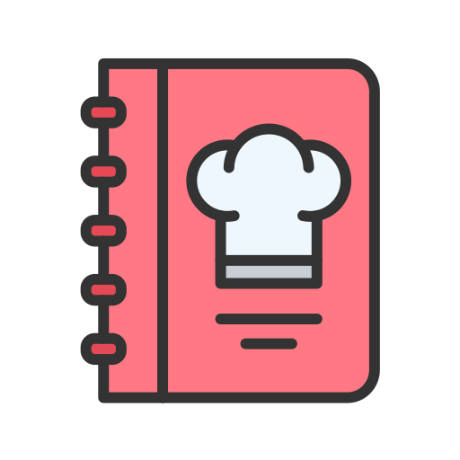
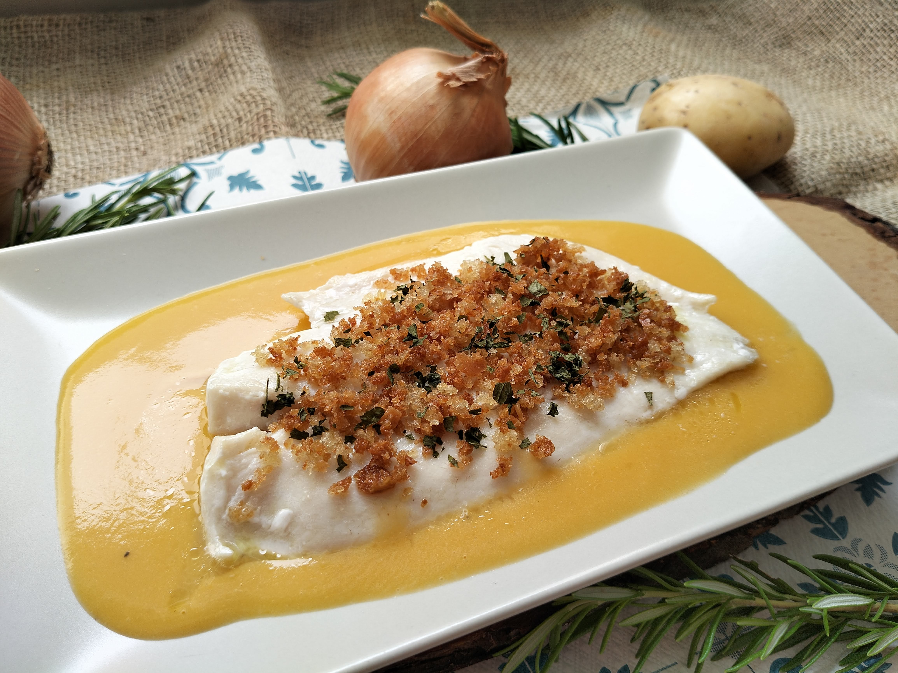
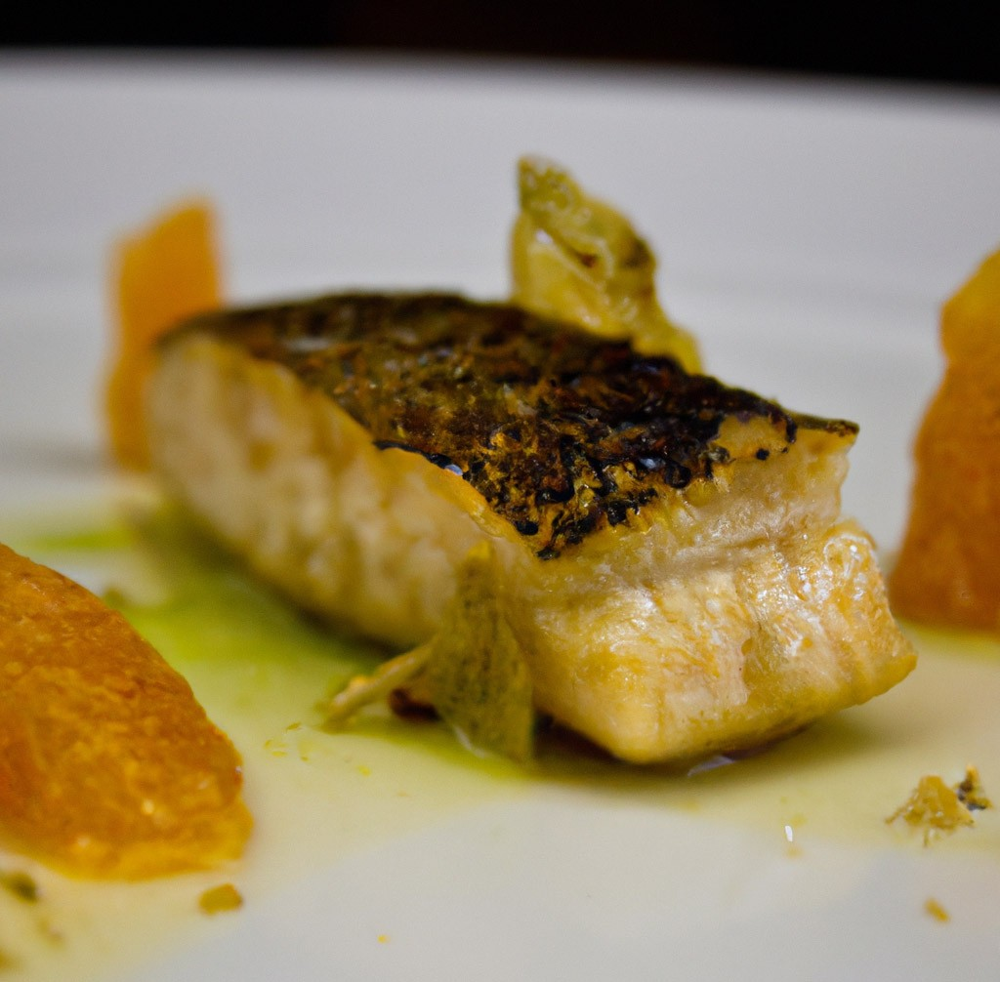

Segundo plato
Lomo de merluza al horno con costra de hierbas y puré de chirivía
Merluza fresca cocinada al horno a la perfección, coronada con una costra crujiente de hierbas aromáticas que aporta textura y fragancia. El puré de chirivía, suave y dulce, equilibra el plato y se complementa con una emulsión ligera de limón.

Ingredientes
- Lomos de merluza: 4 unidades (aprox. 150-200 g cada uno)
- Pan rallado: 50 g
- Perejil fresco: 10 g
- Cilantro fresco (opcional): 5 g
- Ajo: 1 diente
- Ralladura de limón: 1 cucharadita
- Aceite de oliva virgen extra: 30 ml
- Sal: al gusto
- Pimienta negra: al gusto
Paso a paso
- Precalentar el horno a 200°C.

- Pelar y cortar las chirivías y la patata en trozos.
- Cocer chirivías y patata en agua con sal hasta que estén tiernas.

- Escurrir y triturar con mantequilla, leche, sal, pimienta y nuez moscada hasta obtener un puré suave.
- Mezclar pan rallado, perejil, cilantro, ajo picado, ralladura de limón, sal, pimienta y aceite de oliva.
- Colocar los lomos de merluza en una bandeja de horno.

- Cubrir cada lomo con la mezcla de hierbas y pan rallado, presionando ligeramente.
- Hornear los lomos durante 12-15 minutos hasta que la merluza esté cocida y la costra dorada.
- Sacar del horno y dejar reposar 1-2 minutos.
- Servir los lomos acompañados del puré de chirivía.